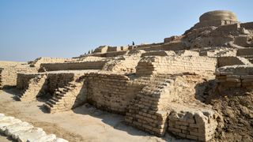

The architecture of India is a blend of indigenous styles and influences from various cultures that have been assimilated over time. From the ancient Indus Valley Civilization to the majestic Mughal Empire, Indian architecture tells the story of a nation's history and creativity.
Among several architectural styles and traditions, the best-known include the many varieties of Hindu temple architecture and Indo-Islamic architecture, especially Rajput architecture, Mughal architecture, South Indian architecture, and Indo-Saracenic architecture. Early Indian architecture was made from wood, which did not survive due to rotting and instability in the structures. Instead, the earliest existing architecture are made with Indian rock-cut architecture, including many Buddhist, Hindu, and Jain temples.
The roots of Indian architecture can be traced back to the Indus Valley Civilization, with its planned cities and elaborate drainage systems. Later, Buddhist architecture flourished, giving rise to iconic stupas like the Great Stupa at Sanchi.
Hindu temple architecture varies across regions. The Dravidian style, prevalent in Southern India, features towering gopurams, as seen in the Brihadeshwara Temple. In contrast, the Nagara style of Northern India is characterized by intricate carvings and shikharas.